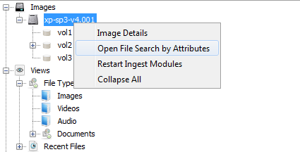

How to Open File Search
To open the File Search, you can do one of the following thing:
-
Click the File Search tab.

-
Select the "Tools" -> "File Search"
Note: The File Search Window is opened and closed automatically. If there's a case opened and there is at least one image inside that case, File Search Window can't be closed.